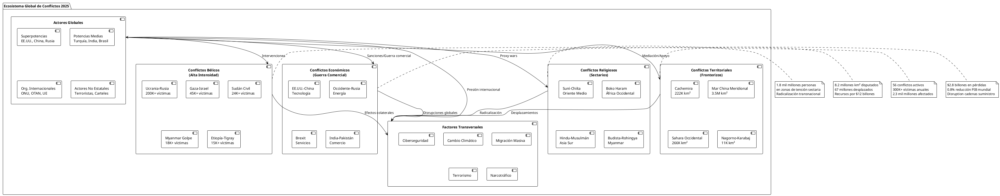

Mundo en Llamas: Taxonomía de Conflictos Globales en 2025
Introducción: El Panorama de Crisis Global
El año 2025 marca un momento crítico en la historia contemporánea: 56 conflictos y guerras activas están transformando el orden mundial establecido tras la Segunda Guerra Mundial. Esta cifra representa el mayor número de conflictos simultáneos desde 1945, configurando un escenario de multipolaridad conflictiva donde las tensiones tradicionales se entrecruzan con nuevas formas de confrontación.
A la guerra de Ucrania, que cumplirá en febrero de 2025 su tercer aniversario, se suma la masacre israelí en la Franja de Gaza, que durante este año ha escalado a una crisis regional, mientras el regreso de Trump le suma imprevisibilidad a un mundo ya de por sí volátil.
Esta realidad multifacética exige un análisis taxonómico que trascienda las categorías tradicionales de conflicto, integrando dimensiones bélicas, económicas, religiosas, territoriales y tecnológicas en un marco analítico comprehensivo.
Taxonomía de Conflictos: Clasificación Multidimensional
Conflictos Bélicos de Alta Intensidad
| Conflicto | Inicio | Duración | Víctimas/Año | Países Involucrados | Tipo |
|---|---|---|---|---|---|
| Ucrania-Rusia | 2022 | 3 años | 200,000+ | UA, RU, OTAN | Interestatal |
| Gaza-Israel | 2023 | 15 meses | 45,000+ | IL, PS, LB, SY | Regional |
| Sudán (Civil) | 2023 | 2 años | 24,000+ | SD | Intraestatal |
| Myanmar (Golpe) | 2021 | 4 años | 18,000+ | MM | Interno |
| Etiopía-Tigray | 2020 | 3 años | 15,000+ | ET | Étnico-regional |
Conflictos Económicos y Comerciales
Guerras Arancelarias y Sanciones
| Eje de Tensión | Sectores Afectados | Impacto PIB | Duración | Escalabilidad |
|---|---|---|---|---|
| EE.UU.-China | Tecnología, Acero | -0.8% mundial | 7 años | Alta |
| Occidente-Rusia | Energía, Finanzas | -2.1% europeo | 3 años | Media |
| UE-Reino Unido | Servicios, Pesca | -0.4% bilateral | 4 años | Baja |
| India-Pakistán | Textil, Agrícola | -0.2% regional | Intermitente | Media |
Las guerras comerciales desestabilizan los mercados globales y afectan a la economía mundial mediante imposiciones arancelarias, aumentan los costos de producción, reducen la competitividad, mientras los BRICS alertan sobre el impacto de la guerra arancelaria y las sanciones en la economía global.
Conflictos Religiosos y Sectarios
| Región | Conflicto Principal | Grupos | Intensidad | Dimensión Internacional |
|---|---|---|---|---|
| Oriente Medio | Suní-Chiíta | SA vs IR | Alta | Proxy wars regionales |
| Nigeria | Musulmanes-Cristianos | Boko Haram | Media | Terrorismo transnacional |
| India | Hindu-Musulmán | BJP vs Minorías | Media | Política doméstica |
| Myanmar | Budista-Rohingya | Ejército vs Minoría | Alta | Crisis de refugiados |
| CAR | Cristiano-Musulmán | Seleka vs Anti-balaka | Media | Intervención internacional |
Conflictos Territoriales y Fronterizos
| Disputa | Países | Área (km²) | Población Afectada | Recursos en Juego |
|---|---|---|---|---|
| Mar de China Meridional | CN, PH, VN, MY | 3,500,000 | 2.8 mil millones | Petróleo, gas, pesca |
| Cachemira | IN, PK, CN | 222,000 | 15 millones | Agua, posición estratégica |
| Sahara Occidental | MA, RASD | 266,000 | 600,000 | Fosfatos, pesca |
| Nagorno-Karabaj | AM, AZ | 11,458 | 150,000 | Energía, corredores |
| Islas Kuriles | RU, JP | 15,600 | 20,000 | Pesca, posición naval |

{kind=link}
Análisis Regional: Focos de Inestabilidad
Europa Oriental: El Epicentro Geopolítico
La guerra ruso-ucraniana ha redefinido la arquitectura de seguridad europea, con implicaciones que trascienden lo militar para abarcar dimensiones energéticas, alimentarias y migratorias. El conflicto ha provocado:
- Desplazamientos masivos: 6.2 millones de refugiados ucranianos
- Crisis energética: Reducción del 40% de suministro gasístico ruso a Europa
- Reconfiguración militar: Expansión de la OTAN con Finlandia y Suecia
- Fragmentación económica: Sanciones por valor de €240 mil millones
Oriente Medio: Complejidad Multifactorial
La región experimenta una convergencia de crisis que incluye:
Conflictos Activos por Subregión
| Subregión | Conflictos Principales | Actores Clave | Proxy Wars |
|---|---|---|---|
| Levante | Siria, Líbano, Gaza | IR, TR, SA, IL | Hezbolá, Hamas |
| Golfo Pérsico | Yemen, Estrecho Hormuz | SA, IR, UAE | Houthis, PMU |
| Mesopotamia | Irak post-ISIS | IR, TR, EE.UU. | Milicias chiítas |
| Magreb | Libia, Túnez | TR, EG, UAE | Tribus, milicias |
África Subsahariana: Crisis de Gobernanza
El continente enfrenta una multiplicidad de conflictos interconectados:
- Sahel: Insurgencias yihadistas en Mali, Burkina Faso, Níger
- Cuerno de África: Crisis en Sudán, tensiones Etiopía-Eritrea
- África Central: Inestabilidad en RDC, CAR, Chad
- África Occidental: Piratería en Golfo de Guinea, tensiones étnicas Nigeria
Asia-Pacífico: Tensiones Sistémicas
La región experimenta el mayor riesgo de escalada entre grandes potencias:
Puntos de Fricción Críticos
| Zona | Probabilidad Escalada | Actores | Implicaciones Globales |
|---|---|---|---|
| Taiwán | 35% (2025-2030) | CN, TW, EE.UU., JP | Cadenas tecnológicas |
| Mar China Meridional | 45% | CN, ASEAN, EE.UU. | Rutas comerciales |
| Península Coreana | 25% | KP, KR, EE.UU., CN | Proliferación nuclear |
| India-China (LAC) | 30% | IN, CN | Estabilidad asiática |
Conflictos Económicos: Nueva Guerra Fría Comercial
Arquitectura de Guerra Comercial Global
Las empresas vinculadas a gobiernos son las principales beneficiarias de las guerras comerciales, especialmente al momento de enfrentar barreras arancelarias, revelando la instrumentalización político-económica de los conflictos comerciales.
Índice de Fragmentación Económica Global (IFEG)
| Bloque | Países Núcleo | PIB Conjunto | Comercio Intra-bloque | Sanciones Aplicadas |
|---|---|---|---|---|
| Occidental | EE.UU., UE, JP, CA, AU | $48.7 billones | 42% | 15,847 individuales |
| Sino-céntrico | CN, RU, IR, KP | $19.2 billones | 23% | 3,456 individuales |
| No Alineados | IN, BR, SA, TR, MX | $12.8 billones | 18% | 892 individuales |
| Swing States | ID, TH, VN, KZ, AE | $4.1 billones | 35% | 234 individuales |
Sectores Estratégicos en Disputa
Tecnologías Críticas
| Sector | Líder Global | Dependencia China | Riesgo Fragmentación |
|---|---|---|---|
| Semiconductores | TW, KR, NL | 65% manufactura | Muy Alto |
| Tierras Raras | CN | 85% refinación | Extremo |
| Baterías EV | CN, JP, KR | 70% cadena valor | Alto |
| 5G/6G | CN, EE.UU., EU | 40% patentes | Alto |
| IA/Computación | EE.UU., CN | 30% investigación | Medio |
Dimensión Religiosa: Resurgimiento del Sectarismo
Geografía de Conflictos Religiosos
El resurgimiento de identidades religiosas como factores de conflicto refleja el fracaso de modelos seculares de organización estatal y la instrumentalización política de creencias:
Intensidad de Conflictos Sectarios por Región
| Región | Índice Tensión | Población Riesgo | Conflictos Activos | Tendencia 2025 |
|---|---|---|---|---|
| Oriente Medio | 8.7/10 | 180 millones | 12 | Escalada |
| Asia Sur | 7.2/10 | 420 millones | 8 | Estable-Alto |
| África Subsahariana | 6.8/10 | 340 millones | 15 | Escalada |
| Asia Sudoriental | 5.4/10 | 68 millones | 4 | Estable |
| Europa | 3.1/10 | 25 millones | 2 | Descendente |
Vectores de Propagación Sectaria
- Proxy Wars: Utilización de grupos religiosos como instrumentos geopolíticos
- Migración Forzada: Desplazamientos masivos alterando demografías locales
- Radicalización Digital: Plataformas online acelerando polarización religiosa
- Competencia Geopolítica: Potencias regionales instrumentalizando divisiones sectarias
Evaluación de Riesgos: Matriz de Probabilidades 2025-2030
Escenarios de Escalada por Región
| Región | Escenario Más Probable | Probabilidad | Impacto Global | Mitigación Posible |
|---|---|---|---|---|
| Europa Oriental | Prolongación guerra UA-RU | 70% | Alto | Negociación territorial |
| Oriente Medio | Escalada Israel-Irán | 45% | Muy Alto | Diplomacia multilateral |
| Asia-Pacífico | Crisis Taiwán-China | 35% | Extremo | Disuasión multilateral |
| África | Fragmentación estados | 60% | Medio | Intervención regional |
| América Latina | Crisis Venezuela-Guyana | 25% | Bajo | Mediación OEA |
Índice de Vulnerabilidad Sistémica (IVS)
Factores de Riesgo Transversal
| Factor | Peso Relativo | Tendencia 2025 | Países Más Vulnerables |
|---|---|---|---|
| Cambio Climático | 25% | Aceleración | BD, PK, PH, VU |
| Desigualdad Económica | 20% | Incremento | ZA, BR, CO, CL |
| Debilidad Institucional | 18% | Estable | AF, IQ, LY, YE |
| Polarización Social | 15% | Incremento | EE.UU., BR, IN, TR |
| Competencia Geopolítica | 12% | Intensificación | TW, UA, SY, LB |
| Recursos Escasos | 10% | Crítico | JO, LB, ER, DJ |
Análisis de Actores: Poder y Responsabilidad
Superpotencias: Gestores o Disruptores
Estados Unidos: Hegemonía en Declive
- Capacidades: Supremacía militar y tecnológica, pero con sobrecarga estratégica
- Limitaciones: Polarización interna, fatiga de intervenciones externas
- Estrategia 2025: "Competencia estratégica" con China, contención selectiva
China: Potencia Ascendente
- Capacidades: Crecimiento económico sostenido, expansión militar acelerada
- Limitaciones: Desafíos demográficos, dependencia tecnológica occidental
- Estrategia 2025: "Reunificación" taiwanesa, hegemonía regional asiática
Rusia: Potencia Revisionista
- Capacidades: Arsenal nuclear, recursos energéticos, capacidad disruptiva
- Limitaciones: Aislamiento internacional, economía sancionada, desgaste militar
- Estrategia 2025: Supervivencia régimen, alianza China-Irán-Corea Norte
Potencias Medias: Protagonismo Creciente
| País | Rol Regional | Capacidades Clave | Conflictos Protagonizados |
|---|---|---|---|
| Turquía | Bisagra euro-asiática | Militar, geográfica | Siria, Libia, Nagorno-Karabaj |
| India | Hegemonía sur-asiática | Demográfica, tecnológica | Cachemira, frontera china |
| Brasil | Liderazgo sudamericano | Económica, diplomática | Venezuela, Amazonía |
| Arabia Saudí | Hegemonía del Golfo | Energética, financiera | Yemen, rivalidad iraní |
| Israel | Potencia militar regional | Tecnológica, militar | Palestina, confrontación Irán |
Tendencias Emergentes: Nuevas Dimensiones del Conflicto
Ciberguerra: El Quinto Dominio
Principales Ciberataques Estatales 2025
| Origen | Objetivo | Sector Afectado | Impacto Estimado | Atribución |
|---|---|---|---|---|
| Rusia | Ucrania/OTAN | Infraestructura crítica | $12 mil millones | Confirmada |
| China | EE.UU./Taiwán | Tecnológico/Militar | $8 mil millones | Alta probabilidad |
| Irán | Israel/Arabia Saudí | Energético/Financiero | $3 mil millones | Probable |
| Corea Norte | Corea Sur/Japón | Financiero/Gubernamental | $1.2 mil millones | Confirmada |
Guerra de Información: Batalla por la Narrativa
La manipulación informativa se consolida como instrumento de confrontación estratégica:
- Desinformación electoral: Interferencia en 67 procesos electorales (2020-2025)
- Polarización social: Amplificación artificial de divisiones internas
- Guerra cultural: Instrumentalización de identidades e historias nacionales
- Diplomacia pública: Competencia por influencia en opinión pública global
Proyecciones Estratégicas 2025-2030
Escenario Base: Multipolaridad Conflictiva (Probabilidad: 45%)
- Mantenimiento de 50-60 conflictos activos simultáneos
- Fragmentación económica en 3-4 bloques geopolíticos
- Escalada controlada sin confrontación directa entre superpotencias
- Institucionalización de la competencia estratégica
Indicadores Clave
- PIB global: Crecimiento 2.1% anual (vs 3.2% histórico)
- Comercio internacional: Reducción 15% respecto niveles 2019
- Desplazados: Incremento a 120 millones personas
- Gasto militar: Crecimiento 6% anual global
Escenario Optimista: Estabilización Gradual (Probabilidad: 25%)
- Resolución negociada de 2-3 conflictos principales (Ucrania, Gaza)
- Renovación arquitectura multilateral (ONU, G7, G20)
- Cooperación forzada ante desafíos globales (clima, pandemias)
- Reducción tensiones comerciales USA-China
Escenario Pesimista: Escalada Sistémica (Probabilidad: 30%)
- Confrontación directa China-EE.UU. sobre Taiwán
- Escalada nuclear regional (India-Pakistán, Israel-Irán)
- Colapso estatal múltiple en África y Oriente Medio
- Fragmentación definitiva orden económico global
Recomendaciones Estratégicas
Para la Comunidad Internacional
- Prevención Estructural: Inversión masiva en desarrollo socioeconómico zonas vulnerables
- Diplomacia Anticipatoria: Sistemas de alerta temprana y mediación preventiva
- Cooperación Forzada: Institucionalización gestión crisis globales (clima, pandemias)
- Reformas Institucionales: Adaptación organismos multilaterales a realidad multipolar
Para Estados Individuales
- Resiliencia Nacional: Fortalecimiento cohesión social y instituciones democráticas
- Diversificación Estratégica: Reducción dependencias críticas de potencias rivales
- Diplomacia Multi-Vector: Evitar alineamientos exclusivos en bloques geopolíticos
- Inversión Defensiva: Modernización capacidades disuasorias convencionales y cibernéticas
Conclusiones: Navegando la Tormenta Global
- El año 2025 representa un punto de inflexión en la historia contemporánea, donde la convergencia de crisis múltiples desafía la capacidad humana de gestión colectiva de conflictos. Con 56 conflictos activos, la humanidad enfrenta su momento más peligroso desde 1945, requiriendo una renovación urgente de enfoques, instituciones y mecanismos de cooperación internacional.
- La taxonomía multidimensional revela que los conflictos contemporáneos trascienden categorías tradicionales, entrelazando dimensiones bélicas, económicas, religiosas y territoriales en un ecosistema complejo de crisis interconectadas. Esta realidad exige respuestas igual de sofisticadas, que combinen prevención, gestión y resolución en estrategias integrales.
- La próxima década determinará si la humanidad logra adaptar sus instituciones y prácticas a un mundo multipolar inherentemente más complejo, o si la incapacidad de gestión colectiva precipita una fragmentación sistémica con consecuencias impredecibles para la civilización global.
- El momento no admite inacción: cada día de retraso en la respuesta institucional aumenta exponencialmente los costos humanos, económicos y ambientales de un orden mundial en desintegración.
Referencias Documentales
- International Crisis Group. "10 conflictos para tener en la mira en 2025", Bruselas, 2025.
- Uppsala Conflict Data Program. "Armed Conflicts Dataset 2025", Universidad de Uppsala.
- El Orden Mundial. "Los conflictos que marcarán el 2025 - Mapas", Madrid, 2025.
- El País Internacional. "El 2025 recibe un mundo en guerra: hay 56 conflictos activos", 2025.
- Stockholm International Peace Research Institute. "SIPRI Conflict Barometer 2025".
- Institute for Economics and Peace. "Global Peace Index 2025", Sídney.
- Council on Foreign Relations. "Global Conflict Tracker 2025", Nueva York.
- Armed Conflict Location & Event Data Project. "ACLED Global Dashboard 2025".
- Heidelberg Institute for International Conflict Research. "Conflict Barometer 2025".
- United Nations High Commissioner for Refugees. "Global Displacement Report 2025".